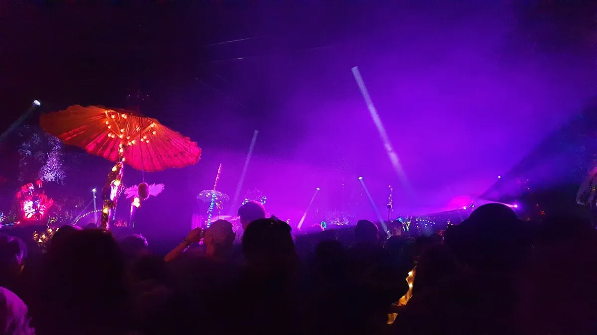
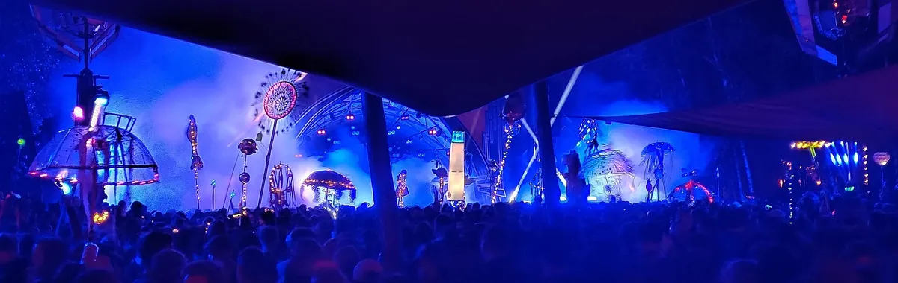
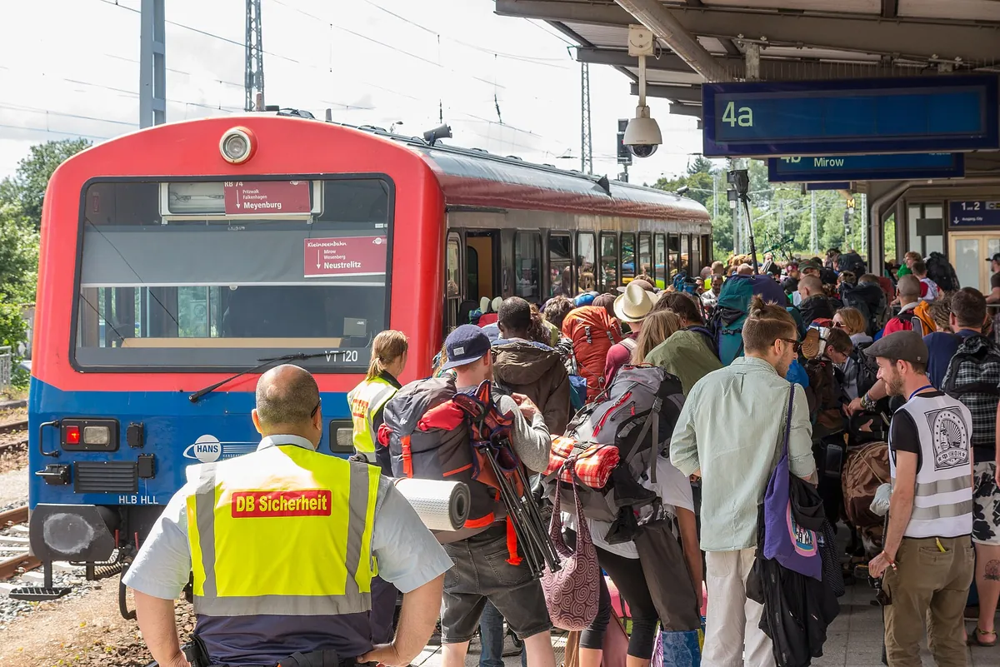

Festival guide, 2028
Fusion Festival in Lärz, Germany: 2027 gap, 2028 dates and tickets
The Kulturkosmos festival on a former Soviet airfield: why 2027 is a Fusion-free year, when 2028 is, how the lottery works and how to get there.
A festival that skips a year.
Fusion is hard to search for, because three years of questions overlap. People look for Fusion Festival 2026 because it just happened, for Fusion Festival 2027 because they assume a summer date, and for Fusion Festival 2028 because the organisers announced a gap. The short answer is that 2027 has no festival.
This page covers what Fusion is, what happened in 2026, the 2027 gap and the 2028 dates, how the ticket lottery works, where Lärz is, how the police dispute of 2019 went, how big the festival is and how to get there. Fusion Fest in South Bend, Indiana, is a different event from the German festival. For the wider German scene, see the guide to German electronic music.
What is Fusion Festival?
Fusion Festival, also searched as Fusion Festival Germany, is held in most summers at the former military airfield on the Müritz lake plateau, and it is organised by Kulturkosmos Müritz, a non-profit association that has run it since 1999. The festival's own English page says the association has about 50 employees through the year, more than 200 crews and over 10,000 people working at the event, with 2,500 supporters. It also says there is no private profit from the bars.
The programme is wide: the festival describes more than 1,000 programme elements and over 3,000 artists, across music, theatre, film, performance and workshops. Much of it is electronic music on open-air floors, and most of the programme is announced only once the festival starts.

The festival traces itself to the summer of 1996, when the site hosted the U-Site Gathering. Fusion Festival followed in 1997, and the organisers marked 30 years of music in Lärz in 2026. A photograph policy runs through all of it: guests are asked to respect "unphotographed" areas, which is why there is little official footage to point you to, and why the sets further down this page were recorded elsewhere.
Fusion Festival 2026
The 2026 edition ran from Wednesday 24 June to Sunday 28 June, according to the official FAQ read on 5 October 2026. Gates opened on Wednesday at 07:00, the Wednesday programme started at 16:00 and the big open-air floors started on Thursday at 18:00. On the loud stages there is a daily break from 11:00 to 14:00 from Friday to Sunday.
| 2026 schedule | Detail |
|---|---|
| Gates open | Wednesday 24 June, 07:00 |
| Wednesday programme | From 16:00 |
| Big open-air floors | Thursday 25 June, 18:00 |
| Party break on the loud stages | 11:00 to 14:00, Friday to Sunday |
| Sunday ticket | Sunday 28 June, 08:00 to 16:00 |
| Camping cleared | Tuesday afternoon after the festival |
The official June 2026 newsletter said tickets had sold out and that the only legitimate route to a ticket was the organisers' own exchange, the Ticket:Bourse. Wristbands carry a chip and are scanned. Sunday tickets were €65 online and €70 on site for Sunday 28 June, 08:00 to 16:00. Motorised vehicles in camping areas needed a vehicle add-on ticket in 2026, with free parking on the airfield otherwise. Fusion Festival 2025 had a different problem: the organisers noted Deutsche Bahn construction on the Berlin to Neustrelitz line during the festival week.
The same newsletter described drug-checking run with the University of Rostock, support teams from Eclipse e.V., and a rule that open dealing leads to removal. It also asked guests not to bring national flags, and said there would be no public viewing of the World Cup.
Fusion Festival 2027 and 2028
There is no Fusion Festival in 2027. The organisers' November 2025 newsletter calls 2027 a Fusion-free year and a free year for the sister theatre festival at.tension too, with the reasons given as breathing, reflecting, tidying up and envisioning. There is a precedent: 2017 was a break year after 20 years of Fusion. The ticket shop, read on 5 October 2026, states that the next edition runs from 28 June to 2 July 2028, and both Fusion and at.tension return in 2028.
So the Fusion Festival 2027 question has a plain answer. If you are searching for a summer 2027 date, none exists, and anything advertising one is not from the organisers' pages read here. The Fusion Festival dates to note are 28 June to 2 July 2028, a Wednesday to a Sunday.
| Item | Status on 5 October 2026 |
|---|---|
| 2026 edition | 24 to 28 June 2026, sold out |
| 2027 | Fusion-free year, no festival |
| Next edition | 28 June to 2 July 2028 |
| 2028 ticket dates | Newsletter sign-up open, no dates or prices published |
| 2028 programme | Not published |
Fusion Festival tickets
Fusion Festival tickets are allocated by registration and lottery, because demand has long exceeded the number of places. Tickets are name-bound and cannot be passed on at will. If you cannot go, the official exchange is the Ticket:Bourse, and the organisers warn against the black market.
How the ticket lottery works
The 2026 process is the best guide to how the 2028 one is likely to run, though the organisers have not confirmed that. Registration ran from 1 to 14 December 2025 through the Fusion Ticketshop, and groups could register together. A first draw followed on 18 December, with payment due from 1 January 2026, and a second draw on 5 February. The December registration counted for both draws and no later registration was possible. Ticket:Bourse and Sunday tickets opened on 5 February, supporter applications ran from 1 to 10 December and vehicle tickets followed in spring.
| 2026 lottery step | Date |
|---|---|
| Supporter applications | 1 to 10 December 2025 |
| Registration at the Fusion Ticketshop | 1 to 14 December 2025 |
| First draw | 18 December 2025 |
| Payment opens | 1 January 2026 |
| Second draw, Ticket:Bourse and Sunday tickets | 5 February 2026 |
| Vehicle tickets | Spring 2026 |
The 2026 ticket cost €220 including a €10 deposit for waste. Local tickets, at €30 for people over 50 and €60 for ages 18 to 50, were available to residents of listed municipalities and sold from 16:00 on the festival Saturday. The 2028 price and registration window had not been published on 5 October 2026.
Fusion Festival Lärz and Kulturkosmos
The Fusion Festival Lärz question is simple: the festival is held at the Müritz Airpark, a former Soviet military airfield outside Lärz in the district of Mecklenburgische Seenplatte in northeast Germany. Kulturkosmos Lärz, the cultural centre the organisers run there, has owned the site for 25 years according to the official site, and has used it for culture for 30 years.
That ownership was briefly in question. On 28 November 2025 the organisers published the Bundeswehr's reply to a press inquiry from the Tagesspiegel: the Lärz site was "currently as of now not yet" in the strategic property reserve that the defence ministry had frozen in October 2025. The wording leaves the outcome open, and I found no later statement on the pages read.
Fusion Festival capacity
The Fusion Festival capacity is reported at about 70,000 visitors. That figure comes from the taz in May 2019 and from other press reports, not from an official statement on the pages read, so treat it as press reporting. Reports of the site’s area range from 100 to 220 hectares.
Fusion Festival stages
Fusion Festival stages number more than 30, according to the official FAQ, and many are converted aircraft hangars. The largest concert stage is the Palapa. Other named places include the Luftschloss, the Palast der Republik, Rootsbase, the Zirkuszelt, the Waschsalon, the Oase and the Sonnendeck, plus a workshop hangar. There is a Konsum supermarket on site near camp B4, and free toilets since 2022. The nearest hospital is 25 km away.

Fusion Festival age limit and rules
Fusion Festival is 18 and over. The festival says under-18s are not allowed on the festival area even with parents, and that the rule was introduced under pressure from authorities. A children's programme ran until 2023. There are age checks at all entrances except the Insel camps I1 to I4, which fill within hours. Pets and dogs, drones, fireworks, sky lanterns, campfires, charcoal barbecues and graffiti are all banned, and guests are asked to respect the photo policy.
Fusion Festival police dispute
The Fusion Festival police dispute began over a security concept. After new security rules were adopted in 2018, the police in Neubrandenburg refused on 15 April 2019 to approve the festival's security concept, the first refusal in more than 20 years, the taz reported on 25 May 2019. The organisers had submitted their plan on 28 February, a permit was denied on 3 May and a revised concept followed on 16 May.
Police President Nils Hoffmann-Ritterbusch demanded a permanent police station on the festival grounds and cited political participants described as partly highly violent. GMX reported on 25 June 2019 that the police first sought about 100 officers working in shifts across the site, and that an early draft mentioned armoured vehicles and water cannons. The organisers, including Martin Eulenhaupt and Jonas Hänschel, said a permanent police presence would feel like harassment, and a petition reached about 138,000 signatures.
The 2019 compromise was a single police station at the entrance, with officers able to enter the site case by case. The festival went ahead from 26 to 30 June 2019. The official site still describes the 2019 demands as disproportionate, and its 2025 newsletter says the 18+ rule was introduced under pressure from authorities.
Fusion Festival lineup
The Fusion Festival lineup is not published as a poster. The programme is announced in the Festival Guide and app from the start of the festival, with some programme information on the website from early June. The 2028 programme was not published on 5 October 2026.
Among the thousands of entries on the official 2026 programme page, names include Acid Pauli, Modeselektor, Apparat, Recondite, Rødhåd, Gerd Janson and Magda.
Fusion Festival sets
No set from Fusion itself is linked here, because the festival's photo and film restraint means there is little recorded material. Four sets from the Selector catalogue follow, by artists who appear on the 2026 programme. None of them was recorded at Fusion: they come from Boiler Room, and they are chosen as listening. The Selector plays another recorded DJ set at random when you want something you do not know.
How to get there
Fusion Festival how to get there is a question with several answers, and the official FAQ, read on 5 October 2026, covers the 2026 pattern. For Fusion Festival Berlin is the nearest big city, and the route is the train to Neustrelitz. Special trains ran on Wednesday from Berlin Gesundbrunnen to Neustrelitz at 10:09 and 13:09. From Neustrelitz, shuttle buses leave from the Rummelplatz, five minutes from the station, at €6 one way. The Brandenburg-Ticket (€33 for five people) and the Deutschlandticket both cover the regional trains. Federal police check people at Neustrelitz station.

Direct Bassliner buses run to the festival bus stop and need a valid festival ticket. By car, take the A24, then the A19 towards Rostock, leave at Röbel (exit 18) and follow the B198 towards Neustrelitz. A guided bike tour starts from the S-Bahn at Oranienburg and covers about 87 km, and a bike dismount zone applies at the site. Taxis are available from Neustrelitz or Waren, with no official taxi shuttles. You cannot arrive before Wednesday, so people who come early camp at the Canoo station in Mirow.
Camping opens on Wednesday at 07:00 and must be cleared on the Tuesday afternoon after the festival. Showers are cold at the Shower Tower and warm at the Waschsalon and the Oase, and there is a cash machine near the main entrance. For clubs in the same city many visitors start from, see the guide to the best clubs in Berlin.
Plan your Fusion Festival trip.
There is no Fusion Festival in 2027. The next announced edition is 28 June to 2 July 2028, and its ticket lottery and prices are not yet published.
Budget the whole weekend.
Use current official prices only. A status of “not published” means the organiser has not released a valid 2027 price.
| Ticket option | Price |
|---|---|
| Fusion 2027Official festival-free year | No event |
| Fusion 202828 June–2 July 2028 | Sale not announced |
| 2028 vehicle or camper add-onDetails not published | Not published |
Booking fees, transport, accommodation and optional upgrades may be separate.
Choose your route.
Train to Neustrelitz, then booked festival shuttle
Official FAQA shuttle ride is only possible with a valid festival ticket. Wait for the 2028 booking instructions.
Train to Waren, then festival taxi route
Waren station on Google MapsThe FAQ names Waren for arrivals from Rostock; current taxi and shuttle arrangements must be checked for 2028.
Car or organised bus to Lärz airfield
Festival site on Google MapsVehicle camping and parking need the correct add-on and gate. Do not use a 2026 vehicle map for 2028.
Recheck the final timetable and pick-up point shortly before travel.
Where you sleep.
Fusion is a camping festival at the airfield. The 2028 campsite, vehicle zones and add-on rules will be published with the next ticket process.
Travel and FAQFood and drink.
There is no 2027 food or drink price list because there is no event. Do not build a 2028 budget from 2026 token, vehicle or Sunday-ticket prices.
- Festival food and drink menu
- Not published
- Water
- Check current event rules
- Payment
- Check current event rules
Pack for the site, not the forecast.
- Photo ID and ticket saved offline
- Tent, sleeping bag, mat and head torch
- Refillable bottle, earplugs and power bank
- Waterproof layer, sun protection and sturdy shoes
- Only luggage you can carry from the arrival point
Leave at home or recheck.
- Glass anywhere on the campsite
- Gazebos, generators or oversized speakers unless expressly allowed
- Open fires and fuel not listed as permitted
- Arena bags above the current size limit
- Leaving without checking the current alcohol and cooking limits
The official ticket page states that 2027 is Fusion-free. Subscribe to the official newsletter for 2028 sale and lottery information rather than buying any supposed 2027 ticket.
Fusion Festival FAQ.
What is Fusion Festival?
A five-day arts and music festival at a former Soviet military airfield in Lärz, Germany, run by the non-profit Kulturkosmos Müritz since 1999. It describes more than 1,000 programme elements and over 3,000 artists.
Is there a Fusion Festival in 2027?
No. The organisers call 2027 a Fusion-free year. The next edition runs from 28 June to 2 July 2028, according to the ticket shop read on 5 October 2026.
When is Fusion Festival 2028?
28 June to 2 July 2028. No ticket dates or prices for 2028 were published on the pages read.
How do Fusion Festival tickets work?
Through registration and a lottery. For 2026, registration ran from 1 to 14 December 2025, with draws on 18 December and 5 February. Tickets are name-bound; the 2026 ticket cost €220 including a €10 waste deposit. The organisers have not announced a 2028 price. The Ticket:Bourse handles exchanges.
What is the Fusion Festival age limit?
18. Under-18s are not allowed on the festival area even with parents, and the rule was introduced under pressure from authorities.
How big is Fusion Festival?
Press reports give about 70,000 visitors. The organisers' own pages read do not state a figure, and reports disagree on the site's area, so none is given.
Where is Fusion Festival held?
At the former military airfield in Lärz, Mecklenburg-Vorpommern, in northeast Germany. The nearest rail station is Neustrelitz, with shuttle buses from there.
What was the Fusion Festival police dispute?
In 2019 the police in Neubrandenburg refused to approve the security concept and demanded a permanent station on the grounds. The compromise was a single station at the entrance, with officers entering case by case.
Sources.
- 2028 dates and the 2027 gap, read on 5 October 2026: Fusion Ticketshop.
- Ticket lottery, 2026 price, 18+ rule, vehicle tickets, Bundeswehr reply, 2026 newsletters and the official FAQ (times, stages, rules, travel), read on 5 October 2026: fusion-festival.de, English pages and news archive.
- Organiser facts (Kulturkosmos Müritz, crews, programme elements): the official English festival page, read on 5 October 2026.
- The 2019 security dispute: taz, 25 May 2019 and GMX, 25 June 2019.
- Photographs: Wikimedia Commons, credited in each caption.
Continue reading
Read next.
 Rave spots~10 min read
Rave spots~10 min readBest Clubs in Berlin: The Legends and the Ones Still Open
The rooms that made Berlin a techno city, the famous clubs that closed, and the best clubs in Berlin that are still open.
Read article → Rave spots~10 min read
Rave spots~10 min readBerghain: Panorama Bar, Sound and Residents
Berghain explained: the former power station, Panorama Bar upstairs, Halle am Berghain, the Kantine, and the Ostgut Ton label.
Read article → Rave spots~6 min read
Rave spots~6 min readBest Clubs in Paris: From Le Palace to Rex Club
Le Palace, Les Bains Douches and Rex Club: the clubs that made Paris nightlife, how each became famous, and the best clubs in Paris open now.
Read article → Rave spots~6 min read
Rave spots~6 min readBest Clubs in Barcelona: From Zeleste to Razzmatazz
Razzmatazz, Nitsa and Macarena Club: how Barcelona's biggest club grew out of a 1970s live venue, and the best clubs in Barcelona open now.
Read article →